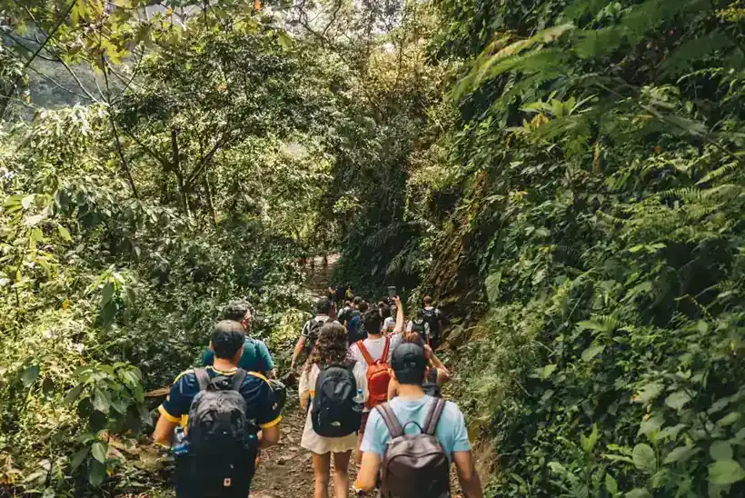
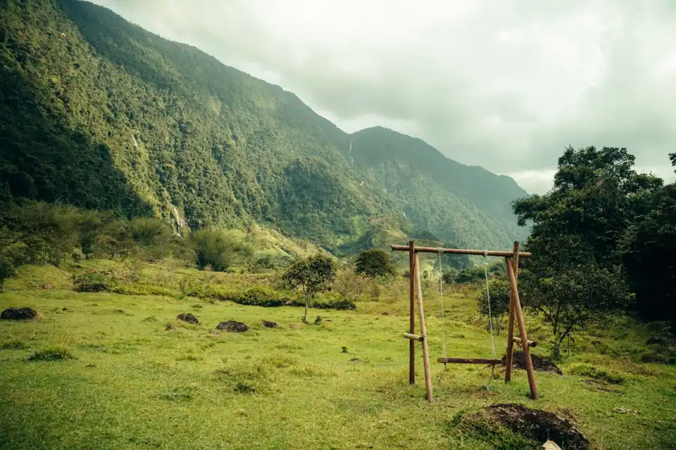

El recorrido completo, con más calma. Caminas con guía entre cascadas y pozas, y duermes en una finca campesina auténtica.
Duración2 días / 1 noche
Salida8:00 a.m., fija
NivelExigente
Comidas4 incluidas
Qué incluye
- Guía local durante todo el recorrido
- Entradas
- 4 comidas: almuerzo y cena (día 1), desayuno y almuerzo (día 2)
- 1 noche en finca campesina
No incluye
- Transporte hasta el punto de partida (lo cotizamos si quieres)
- Bebidas y gastos personales
Itinerario
SalidaLa Piñuela
- Día 1
8:00 a.m. recogida en 4x4 en La Piñuela. Caminata hacia el valle entre cascadas y pozas, almuerzo en el camino, cena y noche en finca campesina.
- Día 2
Desayuno en la finca, más cascadas y pozas, almuerzo, caminata de salida y 4x4 de regreso a La Piñuela.
LlegadaLa Piñuela


Antes de reservar
- Todas las caminatas son exigentes. No hay edad mínima: depende de tu experiencia y condición física. Ante la duda, escríbenos.
- Con mal tiempo reprogramamos o te ofrecemos una alternativa.
- Dormimos en fincas campesinas auténticas: sencillas y limpias, no hoteles.